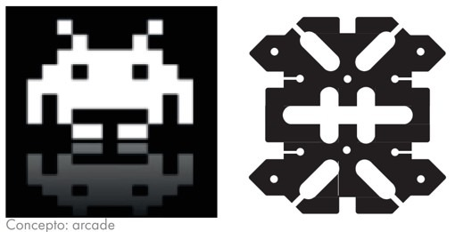
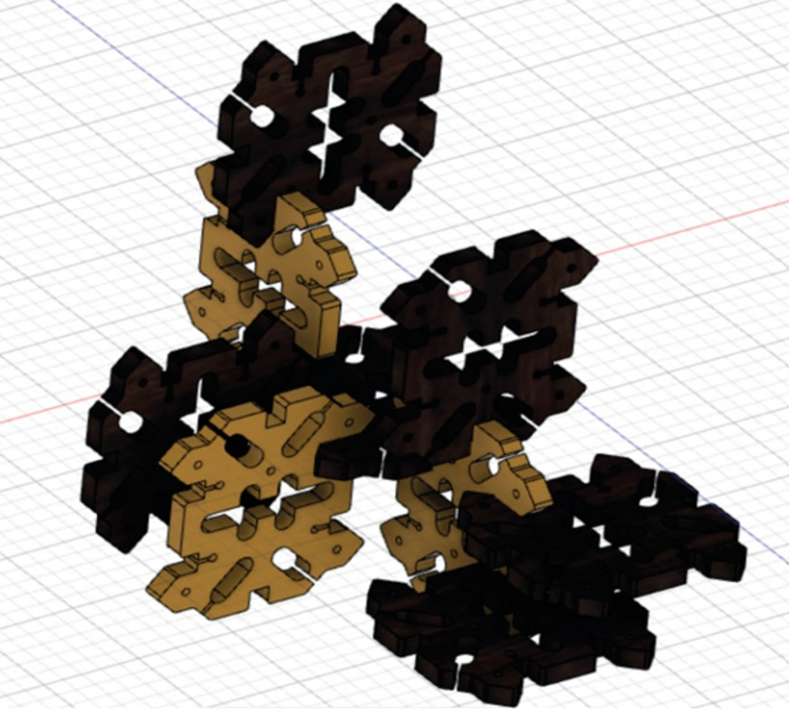
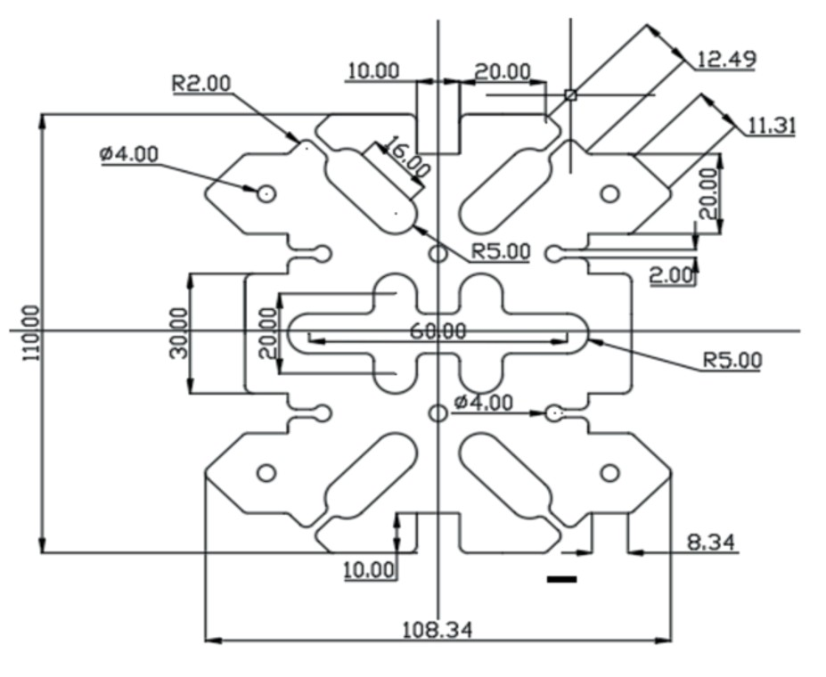
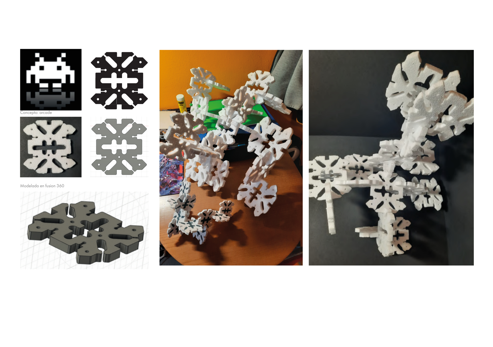
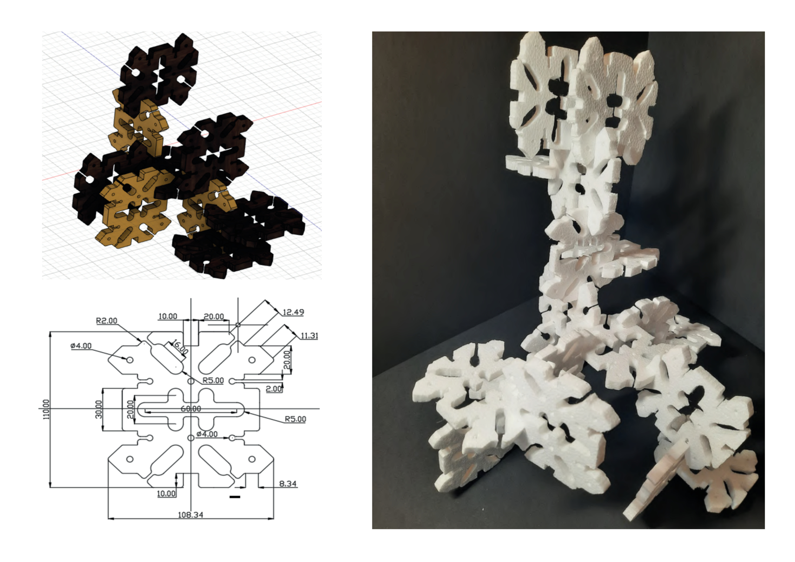

Modular
Design
Exercise
Exercise Overview
A modular design exercise exploring interlocking geometry and spatial aggregation. The brief required developing a single modular unit that could combine and repeat in multiple configurations to create complex structures.
Concept: Arcade
Inspired by retro arcade game pixel art, the module is derived from an 8-bit pixel character abstracted into a 3D interlocking unit. The geometry enables connection on all axes, allowing infinite spatial growth in a fractal-like pattern.


Process
Development began with pixel studies and geometric abstraction, moving to OpenSCAD for precision 3D modelling through parametric design. Mathematical formulas were used to define the interlocking geometry, allowing rapid iteration and precise control over the module's dimensions and connection points.
Multiple configurations were explored to test how the units could be joined together and how the collective behaviour of the assembled pieces would affect the overall structural integrity and visual composition. This iterative process helped refine the connection system and ensure the modules could be combined in infinite spatial arrangements.
Instead of 3D printing in PLA, the physical prototype was fabricated using poriexpan (extruded polystyrene foam), cut with a hot wire tool following cardboard templates that served as reference contours. This approach allowed for rapid, low-cost prototyping while maintaining precise geometries and a lightweight final assembly.
Technical Drawing
Full technical documentation was produced using AutoCAD, resulting in a dimensioned orthographic drawing of the single module with all the exact measurements required to reproduce the geometry accurately.
The technical drawing includes all necessary references: R2.00, ø4.00, and R5.00 callouts, alongside a total module height of 110mm. Every dimension was meticulously defined to ensure the module could be manufactured consistently and assembled correctly with other units.
This documentation serves as the essential blueprint for fabrication, providing precise specifications for both digital and physical production methods, whether using CNC, hot wire cutting, or 3D printing.


